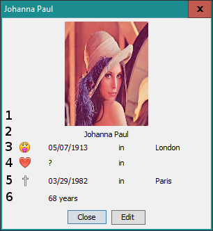

: la naskiĝdato kaj la naskiĝejo ;
: la naskiĝdato kaj la naskiĝejo ; : la edziĝdato kaj la edziĝejo (se la persono
estas/estis edziĝita) ;
: la edziĝdato kaj la edziĝejo (se la persono
estas/estis edziĝita) ;
 : la dato kaj la ejo de morto ;
: la dato kaj la ejo de morto ;
Vi povas vidi detalajn informojn por ĉiu karto duobla-klakante.

La zonoj estas detalitaj ĉi tiu :
: la naskiĝdato kaj la naskiĝejo ;: la edziĝdato kaj la edziĝejo (se la persono
estas/estis edziĝita) ;
: la dato kaj la ejo de morto ;Sekva temo : Aldoni karto